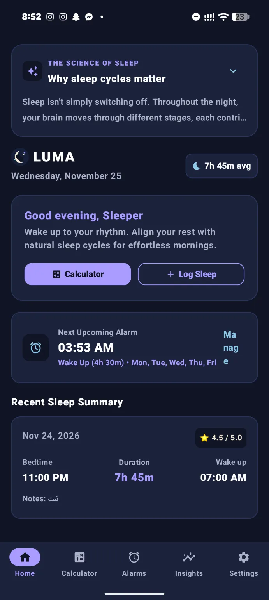
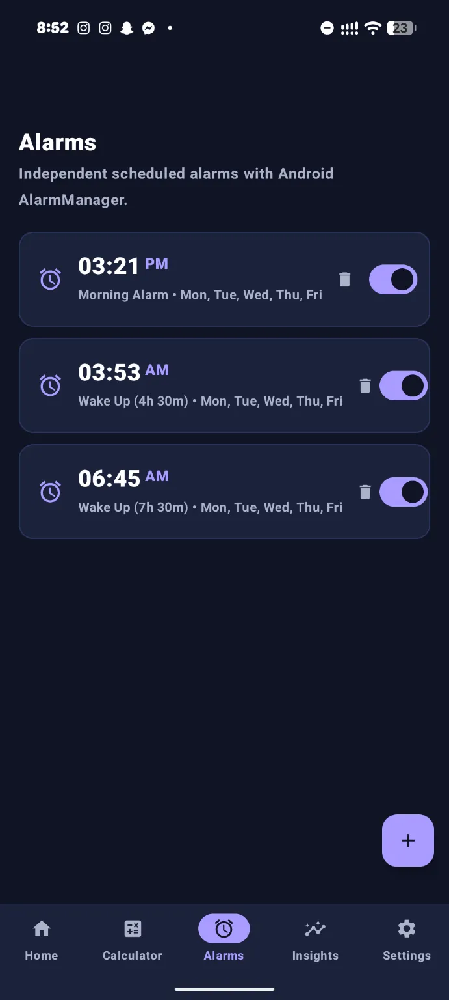

01 / WELLNESS & PRODUCTIVITY
LUMA
Sleep planning, cycle-based suggestions and alarm management.
KotlinJetpack ComposeMaterial 3SQLiteAndroid AlarmManager


01 — Product idea
LUMA is a sleep companion concept that brings sleep planning and alarm management into one place. Instead of being only a clock, it gives users a way to plan around a target bedtime or wake-up time, record sleep sessions and review their habits.
02 — How it was developed
- App structure: A single Compose activity hosts five destinations — Home, Calculator, Alarms, Insights and Settings — with a persistent bottom navigation bar.
- Calculation logic: A dedicated Kotlin service generates suggestions using 90-minute cycle blocks and a user-adjustable sleep-latency allowance. It supports both wake-up-time and bedtime calculations, returning 3, 4, 5 or 6-cycle options.
- Local data: SQLiteOpenHelper stores sleep sessions and alarm records. Sleep entries include date, bedtime, sleep onset, wake-up time, duration, quality and notes.
- Alarm flow: AlarmScheduler creates PendingIntents and schedules alarms with Android AlarmManager. It uses exact-and-idle scheduling where permitted and an inexact fallback if exact-alarm access is unavailable. Receiver/service components handle the alarm event and ringing flow.
- Interface composition: Screens are separated into focused composables, with shared theme definitions and reusable visual components.
03 — UX/UI decisions
The interface uses a calm, night-oriented visual language. A dark canvas reduces visual glare in the evening; lavender marks primary actions and selected states, while pale blue supports secondary information and alarm cues.
#101426Midnight navy#1B223BDeep blue#A99BFFSoft lavender#8DC9E8Light blue#ADB2CASecondary text
- Persistent five-item navigation keeps core features reachable.
- Home prioritizes the next alarm and recent sleep information.
- Cards group related information into scannable sections.
- Accent color and typography create hierarchy without clutter.
Design intention
Make a potentially technical topic feel calm, clear and approachable.
Make a potentially technical topic feel calm, clear and approachable.
What this project demonstratesState-driven UI · Date/time calculations · Local persistence · Android background scheduling · Multi-screen app structure
View LUMA source code ↗